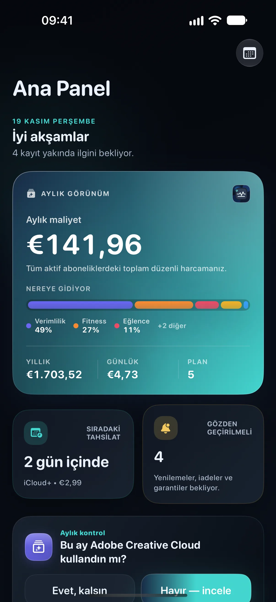
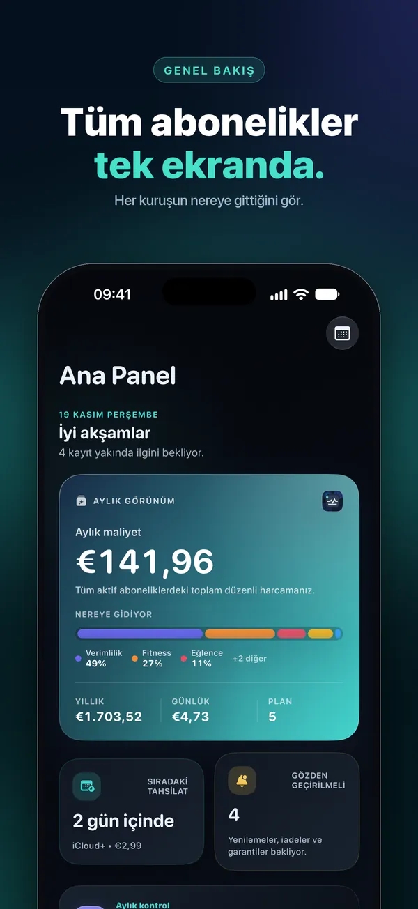
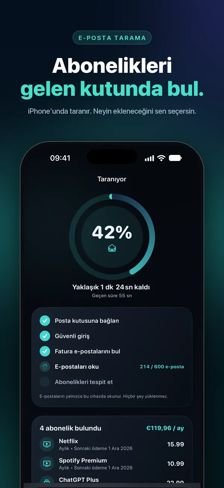
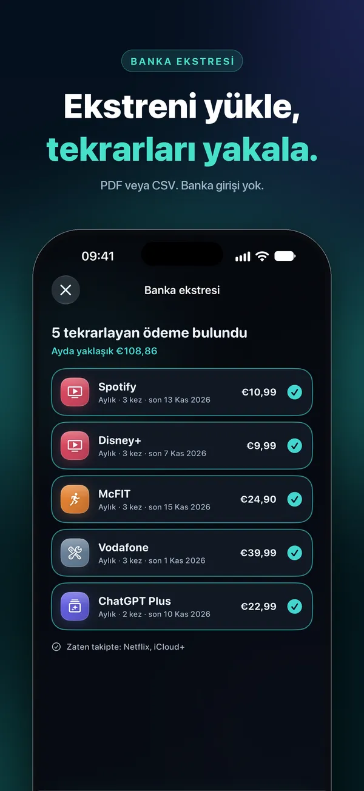
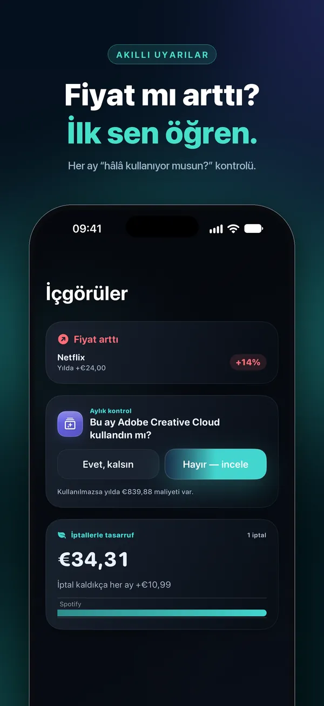
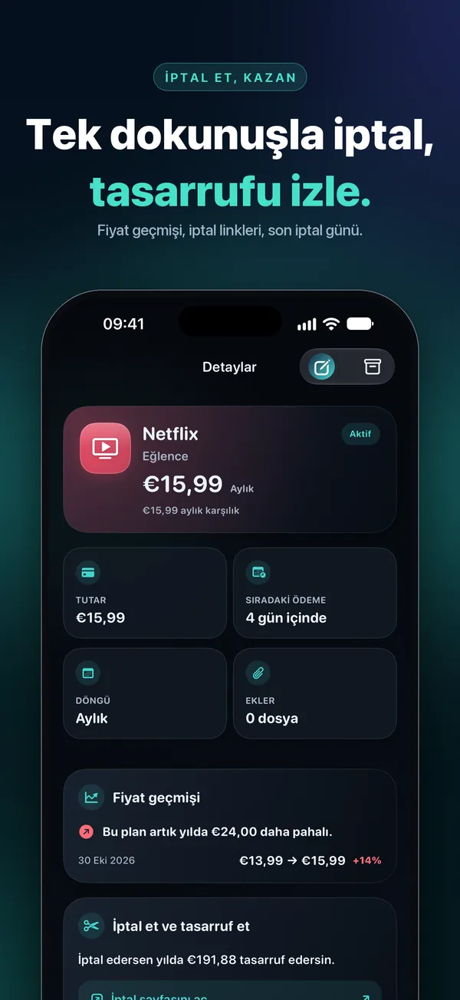
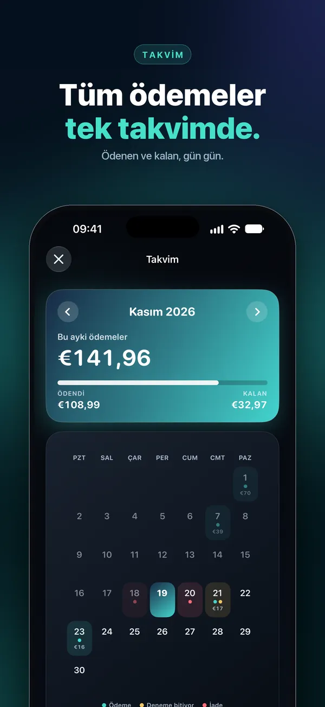
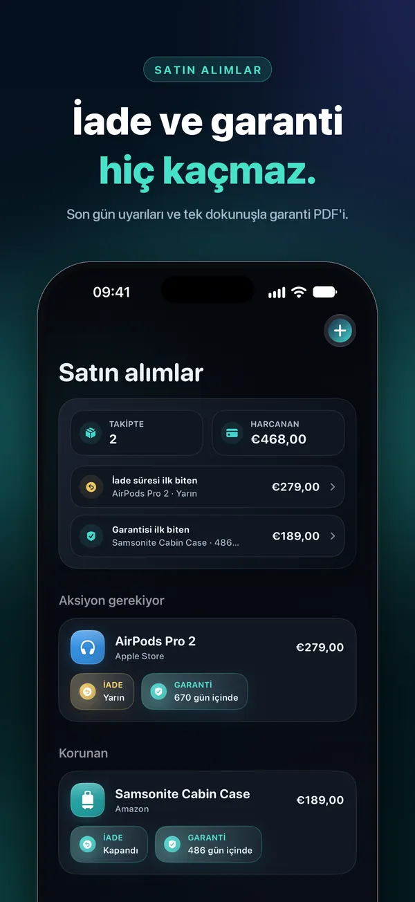
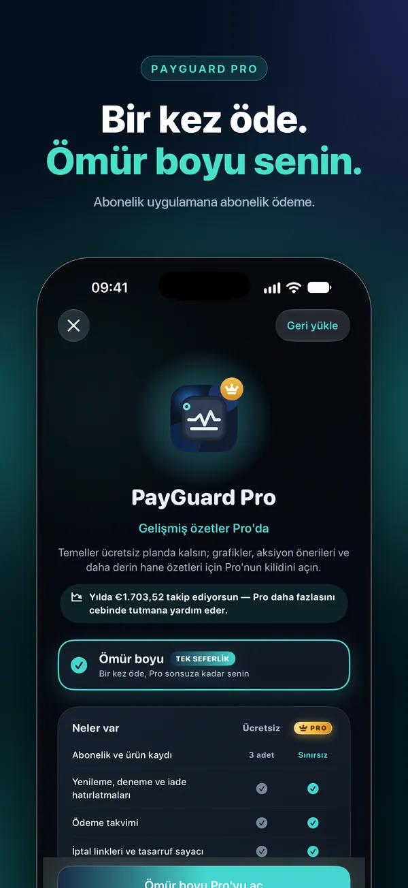

E-posta taraması
Bir e-posta hesabı bağla; PayGuards fatura e-postalarını iPhone’unda okur. Aktif abonelikleri bulur, iptal edilenleri ayırır, neyi ekleyeceğini sen seçersin.
ABONELİKLER · GARANTİLER · İADELER
PayGuards aboneliklerini e-posta kutundan ve banka ekstrenden bulur; zam gelmeden ve son iptal günü geçmeden seni uyarır, garanti ve iade sürelerini de aynı yerde tutar. Banka girişi yok, veriler iPhone’undan çıkmaz.
3 abonelik ve 3 alışverişe kadar ücretsiz. Pro tek seferlik bir satın alma.

Bir e-posta hesabı bağla; PayGuards fatura e-postalarını iPhone’unda okur. Aktif abonelikleri bulur, iptal edilenleri ayırır, neyi ekleyeceğini sen seçersin.
Bankacılık uygulamandan PDF veya CSV ekstreyi seç. Tekrar eden ödemeler cihazda bulunur — banka girişi asla gerekmez.
Bir abonelik pahalanınca ilk sen öğrenirsin. Aylık “hâlâ kullanıyor musun?” sorusu, bırakabileceğin ödemeleri gösterir.
Geçmiş ve yaklaşan ödemeleri gün gün gör. Sözleşme, spor salonu ve hat aboneliklerinin fesih süreleri son günden önce hatırlatılır.
Her alışverişin fişini sakla, iade ve garanti bitiş tarihlerini takip et, gerektiğinde garanti başvurusu için PDF oluştur.
Veriler cihazında kalır; istersen kendi özel iCloud’unla senkronize olur. Bir kez öde — Pro ömür boyu senin, abonelik yok.








Uygulama ve gizlilik soruların için doğrudan iletişime geç.